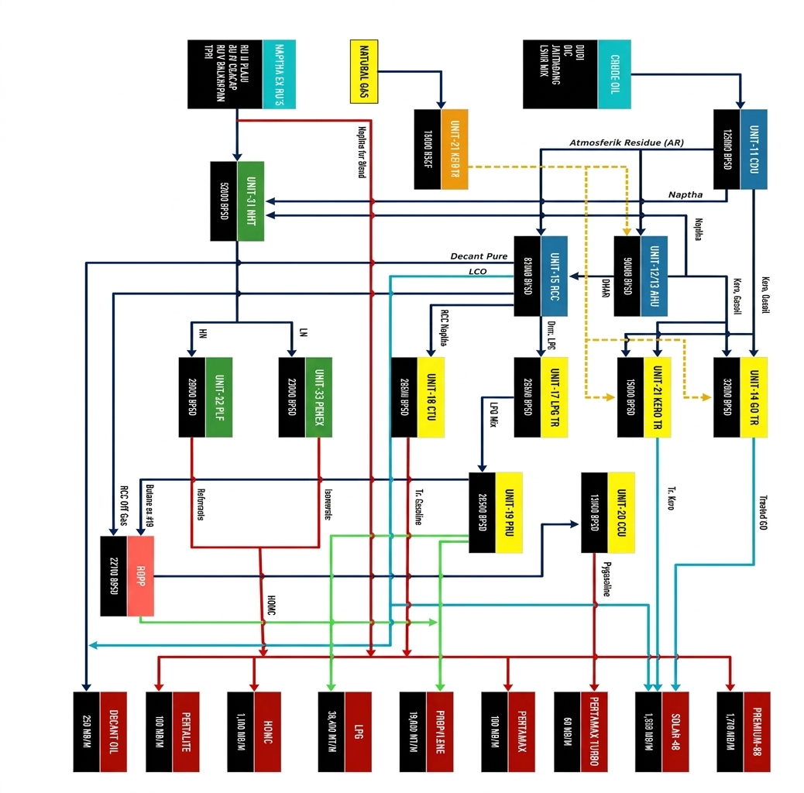

Proses Produksi
Alur Proses Produksi Kilang Balongan
Kilang Balongan mengolah minyak mentah dengan kapasitas 125.000 barel per hari menjadi berbagai produk BBM dan petrokimia. Minyak mentah terlebih dahulu dipisahkan berdasarkan titik didihnya, kemudian setiap fraksi yang dihasilkan diolah lebih lanjut di beberapa unit proses hingga menjadi produk akhir seperti Pertalite, LPG, Propylene, dan Minyak Dekantasi. Bagan berikut menggambarkan aliran bahan dari satu unit ke unit lainnya.
Diagram Alur Proses


Penyulingan Awal
Minyak mentah dipisahkan berdasarkan titik didihnya menjadi nafta, kerosin, gas oil, dan residu. Hasilnya menjadi bahan baku unit-unit berikutnya. Kapasitas 125.000 barel per hari.
Unit terlibat: CDU
Nafta menjadi Bensin
Nafta dimurnikan di NHT (52.000 barel per hari), lalu dibagi dua. Nafta ringan diolah di Penex menjadi isomerat, nafta berat diolah di Platformer menjadi reformat beroktan tinggi. Keduanya menjadi komponen bensin.
Unit terlibat: NHT, Penex, Platformer
Kerosin dan Gas Oil
Kerosin dan gas oil yang belum sesuai spesifikasi dimurnikan dengan hidrogen. Kerosin diolah di KeroHTU, gas oil di GO-HTU (32.000 barel per hari) sampai memenuhi standar pasar.
Unit terlibat: KeroHTU, GO-HTU
Residu menjadi Produk Bernilai Tinggi
Residu dari CDU dikurangi kandungan logam dan karbonnya di AHU (58.000 barel per hari), lalu dipecah di RCC (83.000 barel per hari) menjadi nafta, propilen, LPG, LCO, dan decant oil.
Unit terlibat: AHU, RCC
Pengolahan Hasil RCC
Hasil RCC dipisahkan menjadi gasolin, LPG, dan gas ringan, lalu dibersihkan dari senyawa sulfur. Dari LPG diambil propilen (kemurnian minimal 99,6%), sisanya diolah menjadi polygasoline. LCO dimurnikan di LCO-HTU.
Unit terlibat: UGP, LPG Treater, Gasoline Treater, PRU, CCU, LCO-HTU
Hidrogen, Sulfur, dan Utilitas
Hydrogen Plant memasok hidrogen (kemurnian minimal 99,9%) ke AHU, GO-HTU, dan LCO-HTU. Gas asam diolah menjadi sulfur padat, dan utilitas (listrik, uap, air, nitrogen) menjaga kilang tetap beroperasi.
Unit terlibat: Hydrogen Plant, Amine Treater, Sulfur Plant, SWS, Utilitas